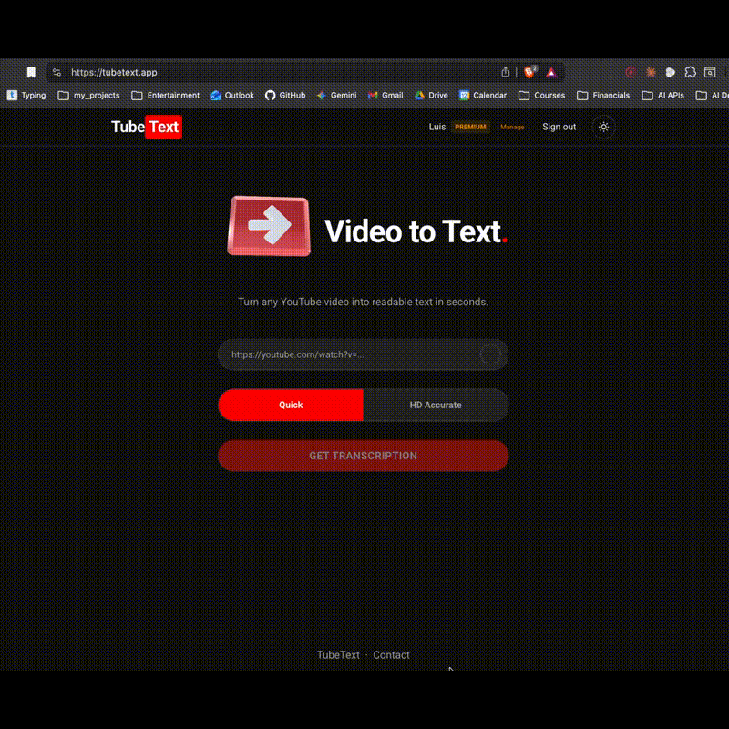
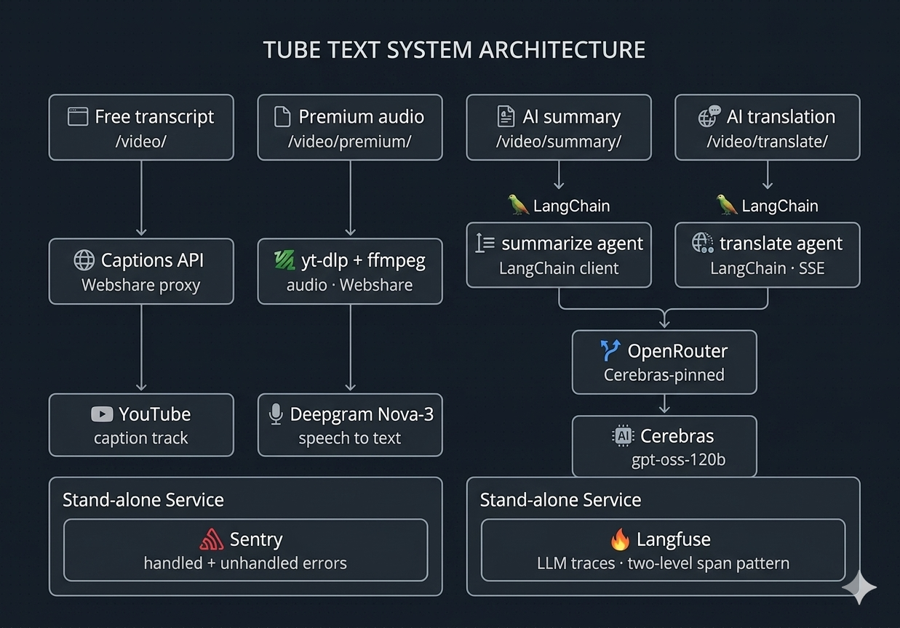

A production tool that transcribes, translates, and summarizes video content, with AI quality evaluation built in — currently with organic paying clients.

YouTube is one of the best places to learn — but learning from it is slow.
A 40-minute talk hides 5 minutes of substance, and the language barrier makes the cost higher: if the talk you need is in a language you don't speak, you either skip it or sit through machine-translated captions that miss the nuance.
TubeText turns any YouTube video into a structured transcript, a focused summary, and a translation in 20+ languages. Watch what matters, in the language you read fastest.
One FastAPI service. Four pipelines. Every call traced end-to-end through Langfuse.
No event queue, no worker pool — the async runtime handles current scale on its own, with asyncio.to_thread bridging the sync SDKs (yt-dlp, Deepgram) into the async stack.
Residential proxy + error classification, not naive retry. YouTube blocks cloud IPs aggressively. Every request routes through Webshare's rotating residential pool, and exceptions from both youtube-transcript-api and yt-dlp are classified into five buckets: transient, no_captions, unavailable, bad_input, unknown. Only transient retries; the rest map to user-facing messages ("try Premium", "video is private") instead of generic failure.
Async orchestration with bounded retry budgets. The free path retries 3 times with (0.5s, 1s, 2s) backoff because each attempt is cheap. The premium path retries only 2 times with 3s backoff because each attempt is 30–90s of yt-dlp + Deepgram work — same pattern, different budget.
Three-tier freemium without DB pollution. Anonymous users (5 videos/month) are tracked by a signed HTTP-only cookie. Zero database writes until they create an account — saves storage and avoids "what do we do with abandoned anonymous data?" questions cleanly.

Four groups, each choice with a short note on the reasoning behind it.
openai/gpt-oss-120b for summary and translation — strong instruction-following at a fraction of GPT-4 cost; one model for both keeps prompts and evaluation consistent.
agents/prompts.yaml, separated from application logic. Iteration doesn't require code changes.
{"error": ...} payloads, not HTTP codes.
http:// redirect URIs and Google rejected with redirect_uri_mismatch. Fixed with ProxyHeadersMiddleware reading X-Forwarded-Proto.
status=active with subscription_id=null.
-rotate username suffix gives per-request IP rotation, defeats YouTube's cloud-IP blocks without managing an IP pool myself.
Three layers of observability run in production. This is the part most AI portfolio projects skip — and the part interviewers actually want to ask about.
A two-level trace pattern wraps every user action:
input and output text, plus metadata: user_id, language tag, tier tag.Why two levels: LLM judges need plain text I/O at the top, not nested chunk-level logs. The outer span is the user's action; the inner generation has the cost details. Costs roll up from inner to outer automatically — margin per request is visible in Langfuse, not a spreadsheet.
Configured in the Langfuse UI, an adequacy judge runs on every translation trace. The judge is openai/gpt-4o-mini via OpenRouter, and it walks an idea-by-idea checklist over source vs. translation — each idea labelled PRESERVED, MISSING, DISTORTED, or ADDED — producing a 1–5 score plus written reasoning.
What this catches that BLEU and ROUGE don't: hallucinated additions, dropped sentences, register shifts. A summary-faithfulness judge is wired on the same pattern, pending UI activation.
The frontend shows a thumbs prompt on 10% of outputs (configurable, to avoid feedback fatigue). Submissions write a Langfuse score with an idempotent ID — {trace_id}:{name} — so resubmits upsert instead of duplicate. Thumbs-down comments (up to 500 chars) flow into the trace as searchable feedback, and a per-IP rate limit (30 / 5 min) blocks spam without forcing an auth wall.
On top of the three layers above, sessions group everything by source video. The frontend generates a crypto.randomUUID() per YouTube URL; the backend attaches it via an X-Session-Id header. All three premium outputs (transcript / summary / translation) for the same video roll up into one Langfuse Session — letting me answer "did this video produce a bad transcript and a bad summary, or just one of them?" instead of guessing.